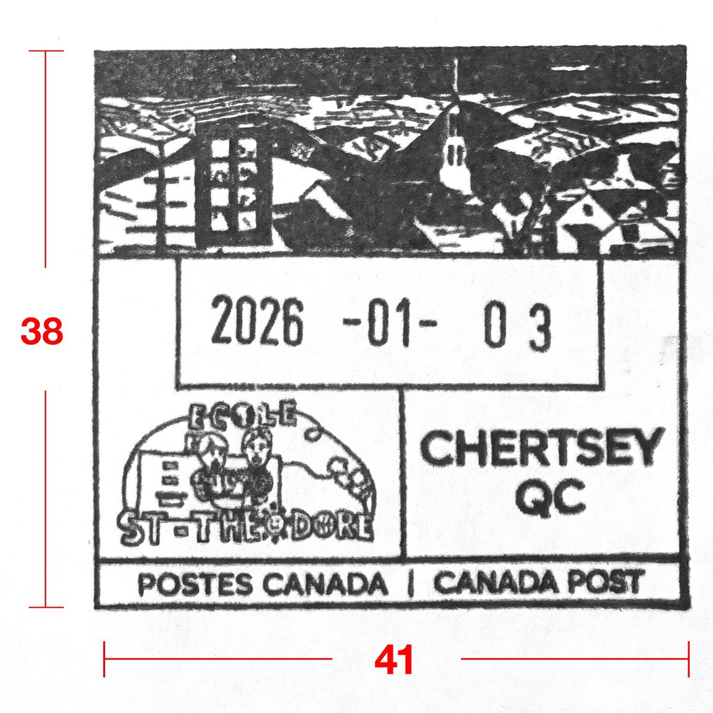

Chertsey CSP pictorial cancel
School logo of Ecole St-Theodore designed by the students
- Status
- Active
- Run dates
- circa 2026 to present
- Design
- School logo of Ecole St-Theodore designed by the students; detail from the tile & brick mural on the exterior of the school gym
- Ink colour
- Black
- Designer
- Unknown
- Post office
- Chertsey CSP
35 Chemin de-la-Vallée-de-Wakefield
Wakefield, QC
J0X 3G0 - Subjects
- school, mural, logo, student
Collect it by mail. Send your stamped covers, with a stamped return envelope, to the post office address above. How to collect pictorial cancels by mail · en français
 BP AnjouIrma Le Vasseur
BP AnjouIrma Le Vasseur BP AnjouInterchange
BP AnjouInterchange BP Montréal RosemontGarden
BP Montréal RosemontGarden BP Montréal RosemontTrain
BP Montréal RosemontTrain BP Montréal RosemontAngus tower
BP Montréal RosemontAngus tower